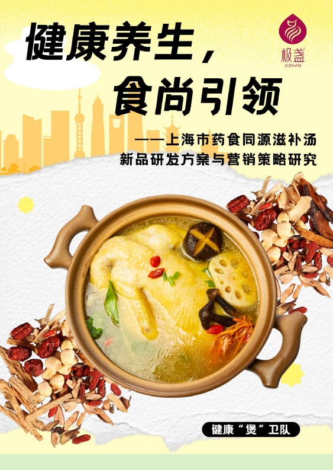
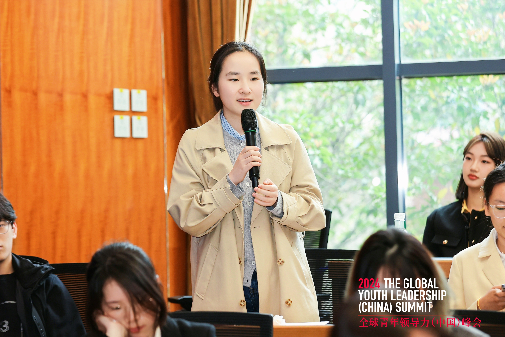
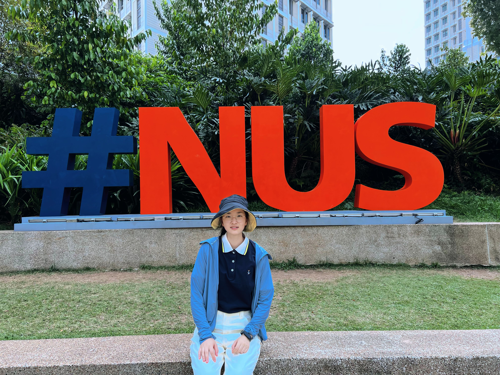

Hi, 我是王璐！
本硕金融 ENTJ CTRL拿捏者 白羊座
标签框不住我，在这里看见更多样的我！
(将 avatar.jpg/png 放在 image/ 目录)
本硕金融的
上海财经大学
上海大学
实习经历
携程
2025.12 - 2026.04用户增长产品经理
业务背景：负责英区火车票新客增长，优化裂变产品矩阵和流量策略，提升获客效率，对支付新客数负责。
- 策略探索 工具场景化获客：利用英区火车票卡工具场景形成差异化获客点，通过"工具价值+裂变补贴+续卡场景"组合拳锁定英区裂变新客，支付新客数 yoy +30%，对比公域投放获客成本降低 40%。
- 玩法重构 互动玩法与裂变矩阵：独立负责迭代白盒激励玩法和行程地图等留存类游戏产品，A/B Test 验证动态奖励对裂变意愿的提升，K 值提升至 0.5。
- 流量分配 流量分发优化：设计订后弹窗差异化分发策略，按用户生命周期与特征精准推送；打通 Deals 频道与核心活动页转化闭环，流量转化效率 +20%，自然拉新 +10%。
- 数据基建 归因链路修复：针对跨端安装与延迟安装导致的 AID/SID 归因断裂，通过页面引导 + 后端埋点关联 + 归因优先级，归因精度 +43%，还原 30% 漏损新客。
小红书
2025.08 - 2025.12产品经理
业务背景：通过定量数据与定性用户原声发现商家售后/申诉的产品卡点和提效机会，制定产品与策略方案。
- 项目一 商家订单申诉流程线上化重构：原商家订单申诉依赖人工，求助率高、链路长，难以支撑业务规模扩张且整体体验较弱。负责申诉线上化产品方案，梳理客服/履约/治理/B 端 C 端端到端业务流，参与设计商家端线上申诉路径及自动化审核策略，抽象关键决策节点，引入自动化判责。商家自主申诉率 5% → 约 70%，单单均申诉耗时 -40%。
- 项目二 商家售后体验优化：售后咨询占订单咨询约40%。基于咨询与申诉数据拆解高频场景，进行用户调研，完成下单/履约/售后全流程梳理，参与极速退款等核心售后能力的产品方案与规则评估，优化前端展示与交互。CPO -10%。
得物
2025.05 - 2025.08行业运营
业务背景：负责得物产业男装商圈的商家运营工作，通过商家运营、商家诊断、数据分析等动作辅助GMV目标和调性目标的推进。
- 商家运营 基于商家分层体系，每周拉取重点商家 GMV、核心单品销售与流量转化数据，结合平台资源输出"一条神裤核心单品打爆优化方案"等可落地建议；负责"疯狂周末"蓝海赛道百万单品商家对接，记录卡点、协调审核与政策同步，活动单次报入率 50% → 70%。
- 数据分析 用 SQL 提取商家全链路经营与投流数据，整合形成可视化看板，基于价格段引力数据为重点商家输出高潜价格带投放建议，推动 1 家重点商家调整投放结构，整体 ROI 2 → 3.39；负责 GTRG 品牌 Q3 卫衣销售预测，结合大盘销量、品牌历史转化率与搜索热度，输出库存备货建议。
- 经营策略诊断 独立完成重点新商 NAICHA STUDIO 经营复盘，从 GMV 拆解、爆品运营、商业化投放、流量结构、品牌人群 5 大维度分析，总结"引力打爆""加强新风格赛道"2 大亮点；参与制定 H2 核心策略，形成新商破局经营手册，直接用于商家拜访会议并获得高度认可。
项目实践
上海市药食同源滋补汤新品设计与营销方案
项目负责人 / 商业洞察者
- 0-1 痛点 用户调研与痛点挖掘：将对生活养生场景的好奇转化为严谨的用户调研，发现核心痛点在于"口味与功效难以精准满足"，并拆解出高价、少选等阻碍转化的主要卡点。
- 建模评估 跨界量化建模：引入层次分析法（AHP）与模糊综合评价法（FCE），对多元细分人群方案进行量化建模评估，输出 30+ 条高规格 PRD 明确产品定位。

📥 点击下载报告沃顿商学院全球青年领导力项目
学院推荐
- 商业治理 沃顿商学院 ARC 课程学习：系统学习商业治理框架与全球化视角下的战略思维。
- 投资路演 策划并执行目标明确的投资路演：从行业研究到估值建模到 Pitch，完成一次完整的投资人沟通闭环。
- 领导力 领导力培养建构：在跨文化团队协作中沉淀关于决策、表达与影响力的方法论。

新加坡国立大学暑期学校
研究助理（RA）
- 研究方向 东盟经济与华裔发挥的作用：参与导师课题的资料整理、文献综述与数据梳理，理解东南亚区域经济格局中的多元角色，完成经济学学术研究。

雅思 7.5 分，四六级均 600+。
语言不是精确的坐标系，而是步履不停的探险。
分数只是底色，它在职场里真正的名字，叫作"无界"。
我越过大西洋的季风，用另一种频率听懂了世界。
那些写在纸面上的数字，最终都变成了我肆意出逃、看清远方边界的底气。
在旷野里扎根，
又在云端生长；
照片是我站在亚洲大陆的最南端！
愿我怀着对世界的好奇，
继续探索山川湖海。
我开始在小红书上分享自己的观点和看法，
从竞赛、保研经历，到实习感悟，
有幸做到过单篇笔记浏览破万。
我希望每一次小小的分享，
都能像一束微光，
照亮和我一样的赶路人。
超级幸运没有依靠黄牛，
抢到过周杰伦和林俊杰演唱会的小姐姐一枚。
演唱会就像乌托邦，
短暂逃离纷繁世界，
让我沉浸在音乐的海洋中。